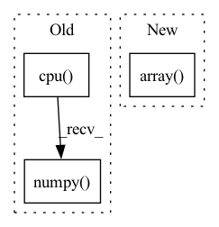

Pattern ID :22517
Before Change
// Cal PSNR
total_psnr += 10. * torch.log10(1. / torch.mean((sr_tensor_y - lr_tensor_y) ** 2))
sr_image_y = sr_tensor_y.mul_(255.0).cpu().squeeze_(0).squeeze_(0).numpy()
sr_image = np.array([sr_image_y, lr_ycbcr[..., 1], lr_ycbcr[..., 2]]).transpose([1, 2, 0])
sr_image = np.clip(imgproc.convert_ycbcr_to_rgb(sr_image), 0.0, 255.0).astype(np.uint8)
sr_image = Image.fromarray(sr_image)
sr_image.save(sr_image_path)After Change
lr_y_tensor = lr_y_tensor.half()
// Extract Y channel hr image data.
hr_image = np.array( hr_image) .astype(np.float32)
hr_ycbcr = imgproc.convert_rgb_to_ycbcr(hr_image)
hr_y_image = hr_ycbcr[..., 0]
hr_y_image /= 255.In pattern: SUPERPATTERN
Frequency: 3
Non-data size: 3
Instances Fragment ID: 71146553
Project Name: lornatang/vdsr-pytorch
Commit Name: 4a9bc788a52873e287460db8207a3c5dd5543870
Time: 2021-11-19
Author: liuchangyu1111@gmail.com
File Name: validate.py
M Class Name: AnonimousClass
N Class Name: AnonimousClass
M Method Name: main(0)
N Method Name: main(0)
M Parent Class:
N Parent Class:
M File Name: validate.py
N File Name: validate.py
M Start Line: 66
M End Line: 84
N Start Line: 66
N End Line: 95
Before Change
y /= max_label
batch_fake_images = netG(z, y)
raw_fake_images[tmp:(tmp+batch_size)] = batch_fake_images.cpu().detach().numpy()
raw_fake_counts[tmp:(tmp+batch_size)] = y.cpu().view(-1).detach().numpy()
tmp += batch_size
//remove extra entries
raw_fake_images = raw_fake_images[0:NFAKE]After Change
raw_fake_labels = raw_fake_labels.astype(np.float)
//convert class labels to raw labels
raw_fake_labels = np.array( [class2label[raw_fake_labels[i]] for i in range(NFAKE)])
return fake_images, raw_fake_labels
Fragment ID: 71146552
Project Name: ubcdingxin/improved_ccgan
Commit Name: 8a85572c67f2b5e51be8e71eb77edbead26b2c0a
Time: 2020-03-11
Author: dingx92@gmail.com
File Name: CellCounting/Train_cDCGAN.py
M Class Name: AnonimousClass
N Class Name: AnonimousClass
M Method Name: SampcDCGAN(7)
N Method Name: SampcDCGAN(7)
M Parent Class:
N Parent Class:
M File Name: CellCounting/Train_cDCGAN.py
N File Name: CellCounting/Train_cDCGAN.py
M Start Line: 134
M End Line: 159
N Start Line: 136
N End Line: 165
Before Change
return {
"action":action_scaled.cpu().squeeze().numpy()[0],
"log_prob": log_prob.cpu().numpy() [0]
}After Change
ret_single = True
obs = [obs]
if type(obs) != torch.tensor:
obs = torch.FloatTensor(np.array( obs) ).to(util.device)
action, log_prob = itemgetter("action_scaled", "log_prob")(self.policy_network.sample(obs, deterministic=deterministic))
if ret_single:
action = action[0] Fragment ID: 71146551
Project Name: x35f/unstable_baselines
Commit Name: fd650918d0f96ab53625afed362025e5a53c10a6
Time: 2022-06-13
Author: 1621322691@qq.com
File Name: unstable_baselines/baselines/sac/agent.py
M Class Name: SACAgent
N Class Name: SACAgent
M Method Name: select_action(3)
N Method Name: select_action(3)
M Parent Class: BaseAgent,torch.nn.Module
N Parent Class: BaseAgent,torch.nn.Module
M File Name: unstable_baselines/baselines/sac/agent.py
N File Name: unstable_baselines/baselines/sac/agent.py
M Start Line: 148
M End Line: 158
N Start Line: 140
N End Line: 152